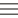

🐭 도시쥐와 시골쥐의 Notion
1. side-bar 숨기기 좌상단의 space-name에 hover할 때 side-bar를 숨길 수 있는 버튼이 표시됩니다. 클릭하면 editor 영역을 확장하여 전체 보기를 제공합니다. 2. 새로운 document 생성 좌상단의 생성 버튼은 root document를, docment-list에서 hover했을 때 나타나는 버튼은 해당 document의 하위 document를 생성합니다. 3. breadcrumb 표시 editor 영역에 표시된 document path를 최상위 document / 상위 document / 현재 document 순으로 표시합니다. 4. document 삭제 tool-bar 내부의 삭제 버튼을 클릭하면 현재 editor 화면에 표시된 document가 삭제됩니다.